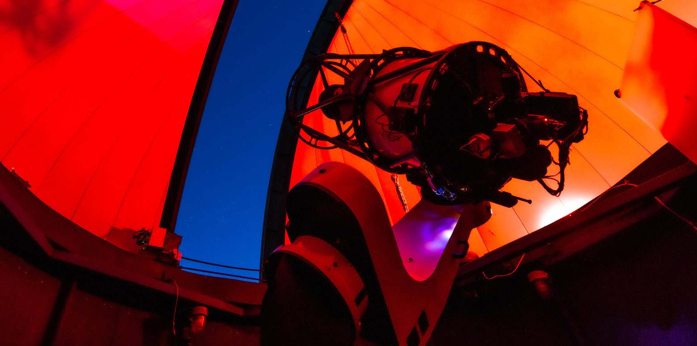

Burke-Gaffney Observatory
I am the Director of the Burke-Gaffney Observatory (BGO) at Saint Mary's University. The BGO is a robotic and fully automated observatory, and it was the first telescope in the world to be accessible via social media. It is used for teaching, public outreach, and occasionally research (on variable stars, supernovae, transients). We run regular public tours and stargazing evenings, as well as special outreach events (e.g. for solar eclipses).
